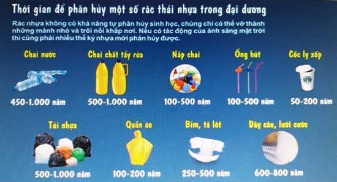
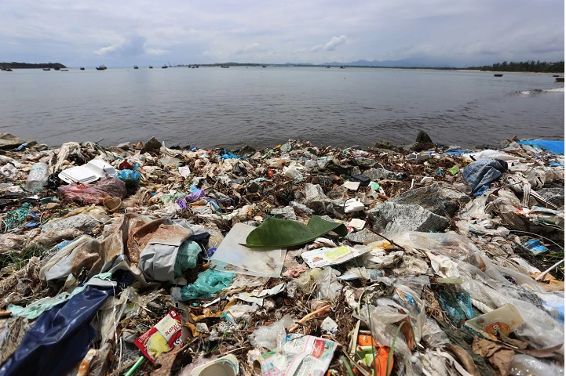
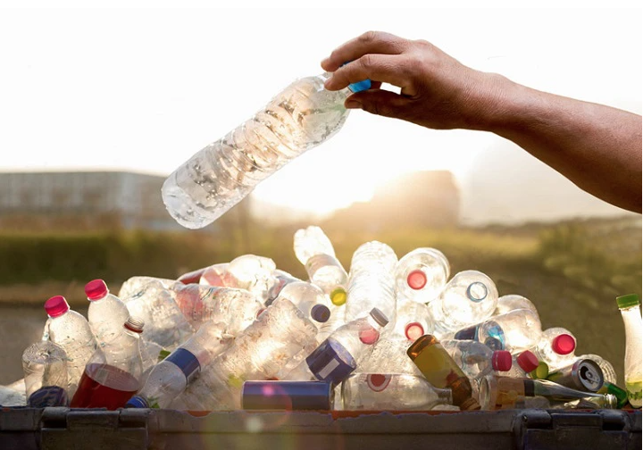
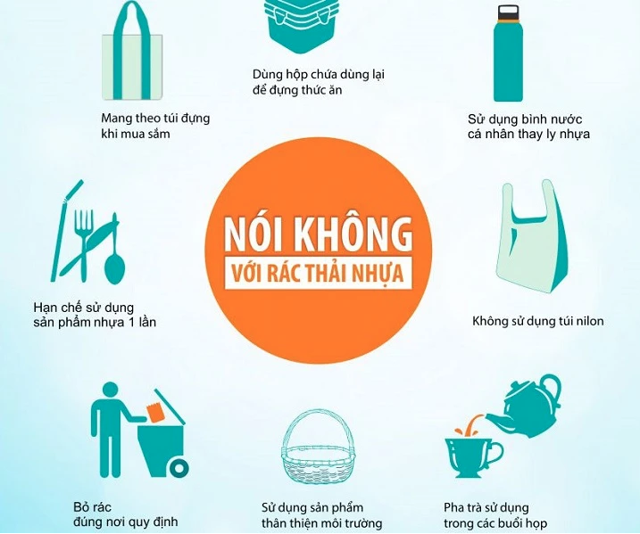

Những tác hại của rác thải nhựa đối với môi trường và đời sống cần biết
Rác thải nhựa đang được xem là vấn đề ảnh hưởng rất lớn đến môi trường không những chỉ riêng Việt Nam mà ở hầu hết các quốc gia trên thế giới. Cụ thể rác thải nhựa là gì cũng như những
Rác thải nhựa là gì?
Rác thải nhựa là các sản phẩm làm từ nhựa hoặc chất dẻo tổng hợp đã qua sử dụng và được thải ra môi trường. Những sản phẩm này không có sẵn trong tự nhiên mà do con người tạo ra, bao gồm túi nhựa, chai nhựa, ống hút nhựa, túi nilon và các loại chất dẻo khác. Rác thải nhựa có thời gian phân hủy rất lâu, có thể kéo dài từ hàng trăm đến hàng ngàn năm.

Rác thải nhựa tốn rất nhiều thời gian để phân hủy có thể lên đến hàng nghìn năm
Báo động tình trạng rác thải nhựa hiện nay tại Việt Nam và trên thế giới
Tình trạng rác thải nhựa hiện nay đang trở thành vấn đề nghiêm trọng trên toàn cầu. Theo báo cáo của Liên Hiệp Quốc, mỗi năm thế giới tiêu thụ khoảng 500 tỷ túi nhựa, và khoảng 40% nhựa được sản xuất không hề được tái sử dụng, dẫn đến lượng lớn rác thải nhựa bị thải ra môi trường.
Tại Việt Nam, tình hình rác thải nhựa cũng đang ở mức báo động. Mỗi năm, Việt Nam thải ra khoảng 1.8 triệu tấn nhựa, trong đó có 730.000 tấn rác thải nhựa bị đổ ra biển. Tình trạng này không chỉ gây ảnh hưởng đến môi trường biển mà còn có tác động lớn đến hệ sinh thái và sức khỏe con người.
Rác thải nhựa không chỉ nổi trên bề mặt nước mà còn bị lắng đọng dưới đáy đại dương, gây ra sự ô nhiễm môi trường biển nghiêm trọng. Những mảnh vi nhựa (microplastic) cũng bị sinh vật biển nuốt phải, rồi thông qua chuỗi thức ăn, cuối cùng có thể xâm nhập vào cơ thể con người. Nếu không có biện pháp xử lý và kiểm soát, rác thải nhựa sẽ tiếp tục tích tụ và gây hại cho môi trường và hệ sinh thái trong thời gian dài.
Những tác hại của rác thải nhựa đối với môi trường và đời sống cần biết

Theo các chuyên gia, rác thải nhựa gây ảnh hưởng nghiêm trọng đến môi trường và cuộc sống. Ảnh hưởng đến nhiều khía cạnh như:
Gây ô nhiễm môi trường
- Rác thải nhựa có thời gian phân hủy rất lâu từ vài trăm năm lên đến 1000 năm. Vì vậy sẽ gây ra sự tích tụ nhựa lớn trong môi trường gây ô nhiễm đất, nước cũng như mỹ quan.
- Ngoài ra trong quá trình phân hủy nhựa sẽ tạo nên những mảnh nhỏ được gọi là vi nhựa dễ dàng lan truyền khắp nơi gây ô nhiễm cho đất và nước.
Tác động tiêu cực đến động vật
- Rác thải nhựa gây nên nhiều tác động tiêu cực đến động vật. Lý giải điều này các chuyên gia cho rằng: có nhiều loại động vật đặc biệt là động vật biển rất dễ nhầm lẫn là thức ăn. Việc ăn phải nhựa có thể dẫn đến tử vong do nghẹt thở hoặc tắc nghẽn hệ tiêu hóa. Hơn 300 loài sinh vật biển đã gặp nguy hiểm do rác thải nhựa. Ngoài ra rác thải nhựa có thể trôi nổi trong nước khi động vật biển di chuyển có thể mắc phải bó buộc gây chết.
- Tổn thương hệ sinh thái: Khi nhựa tích tụ trong môi trường, nó có thể gây mất cân bằng sinh thái, đe dọa sự sống còn của nhiều loài.
Gây hại cho vi sinh vật và đất
Không những gây tác động tiêu cực đến động vật mà còn gây hại cho sinh vật có trong đất làm suy giảm chất lượng đất. Cụ thể nhựa trong đất làm giảm khả năng giữ nước và chất dinh dưỡng, ảnh hưởng xấu đến cây trồng và hệ vi sinh vật ảnh hưởng tiêu cực đến năng suất trong sản xuất nông nghiệp.
Tác động đến sức khỏe con người
- Các mảnh vi nhựa có thể xâm nhập vào thực phẩm và nước uống của con người, dẫn đến việc chúng ta tiêu thụ nhựa mà không hay biết. Việc tiếp xúc lâu dài với các chất độc hại trong nhựa có thể gây ra nhiều vấn đề sức khỏe, bao gồm các bệnh về hệ thần kinh, tiêu hóa, và có nguy cơ gây nên bệnh ung thư.
- Khi rác thải nhựa bị đốt, đặc biệt là trong điều kiện không đúng quy chuẩn, các khí độc hại như dioxin và furan được phát thải, gây ô nhiễm không khí và ảnh hưởng nghiêm trọng đến sức khỏe cộng đồng.
Tác động đến tài chính
Việc thu gom, xử lý và tái chế rác thải nhựa đòi hỏi nguồn lực tài chính lớn, tạo gánh nặng cho các hệ thống quản lý rác thải và ngân sách của chính phủ.
Nguyên nhân gây ô nhiễm chất thải nhựa
Nguyên nhân gây ô nhiễm chất thải nhựa có thể được phân thành ba nhóm chính nhau sau:

Nhận thức cá nhân
- Sử dụng đồ nhựa một lần: Người dân thường lựa chọn các sản phẩm nhựa dùng một lần như cốc, thìa, ống hút, túi nilon do tính tiện lợi và chi phí thấp. Tuy nhiên, việc sử dụng không kiểm soát các sản phẩm này đã làm gia tăng đáng kể lượng rác thải nhựa.
- Thiếu ý thức trong việc vứt rác: Nhiều người không tuân thủ quy tắc về việc phân loại và vứt rác đúng nơi quy định. Hành vi vứt rác bừa bãi, đặc biệt là chất thải nhựa, dẫn đến việc rác thải lan tỏa khắp nơi, khó thu gom và xử lý triệt để.
- Phân loại rác tại nguồn chưa được thực hiện đầy đủ: Thiếu nhận thức về tầm quan trọng của việc phân loại rác thải tại nguồn đặc biệt là rác nhựa, khiến quá trình xử lý và tái chế trở nên phức tạp và kém hiệu quả.
Hệ thống xử lý rác thải chưa hoàn thiện
- Hạn chế về cơ sở hạ tầng: Hệ thống thu gom và xử lý chất thải nhựa hiện nay vẫn còn yếu kém, chưa đáp ứng đủ nhu cầu về tái chế và xử lý rác. Nhiều khu vực chưa có cơ sở tái chế nhựa hiện đại, dẫn đến tỷ lệ nhựa được tái chế rất thấp.
- Tỷ lệ tái chế thấp: Ở Việt Nam, chỉ có khoảng 20% rác thải nhựa được tái chế, trong khi phần còn lại thường bị đốt hoặc chôn lấp, gây ô nhiễm không khí và làm tăng nguy cơ xói mòn đất. Điều này đặt ra thách thức lớn về lâu dài đối với môi trường.
Xem thêm: Xe chở rác chạy điện 4 bánh Magway Y40 - giải pháp giúp phân loại rác tại nguồn
Sự thờ ơ của chính quyền
- Thiếu quản lý và chính sách: Chính quyền địa phương ở nhiều nơi chưa có các biện pháp quản lý hiệu quả về việc sử dụng và xử lý rác thải nhựa. Sự thiếu kiểm soát này làm tình trạng ô nhiễm trở nên nghiêm trọng hơn.
- Không có các chiến dịch tuyên truyền mạnh mẽ: Thiếu các chiến dịch tuyên truyền về tác hại của rác thải nhựa và tầm quan trọng của tái chế cũng khiến cho vấn đề này không được giải quyết triệt để.
Những nguyên nhân này cùng tác động đã dẫn đến tình trạng ô nhiễm rác thải nhựa gia tăng, đòi hỏi các biện pháp cấp bách từ cả cá nhân và chính quyền để cải thiện và bảo vệ môi trường.
Một số giải pháp xử lý vấn đề chất thải nhựa
Một số giải pháp xử lý vấn đề chất thải nhựa nhằm giảm thiểu tác động tiêu cực đến môi trường và sức khỏe con người bao gồm:

Hoàn thiện hệ thống pháp lý
- Cần xây dựng và áp dụng các quy định về trách nhiệm của nhà sản xuất trong việc thu hồi, tái chế và phân loại rác thải nhựa sau khi sản phẩm được tiêu thụ.
- Quản lý theo chu kỳ vòng đời của sản phẩm nhựa và thiết lập các tiêu chuẩn môi trường giống với các quốc gia tiên tiến.
- Chính sách ưu đãi và hỗ trợ cho các doanh nghiệp hoạt động trong lĩnh vực tái chế nhựa nhằm tăng cường năng lực xử lý.
Áp dụng mô hình kinh tế tuần hoàn
- Tăng cường sử dụng hiệu quả nguồn tài nguyên, đặc biệt là trong ngành công nghiệp tái chế rác thải nhựa, nhằm tái tạo nguyên liệu cho sản xuất.
- Khuyến khích các doanh nghiệp thay thế sản phẩm nhựa gây hại bằng nguyên liệu thân thiện với môi trường.
Thay đổi tư duy sản xuất và tiêu dùng
- Các doanh nghiệp cần chuyển từ việc tập trung sản xuất sản phẩm rẻ và nhanh sang tạo ra những sản phẩm bền vững, dễ tái chế.
- Người tiêu dùng cũng cần thay đổi thói quen tiêu dùng bằng cách giảm thiểu sử dụng sản phẩm nhựa dùng một lần, chuyển sang sử dụng sản phẩm tái sử dụng nhiều lần và thân thiện với môi trường.
Xây dựng chiến lược truyền thông
- Nâng cao nhận thức của công chúng và doanh nghiệp về trách nhiệm bảo vệ môi trường bằng cách cung cấp thông tin rõ ràng về hậu quả của rác thải nhựa và cách phân loại rác tại nguồn.
- Xây dựng nhiều chiến dịch tuyên truyền tập trung vào việc giáo dục cộng đồng về tầm quan trọng của việc tái chế và giảm sử dụng sản phẩm nhựa.
Tuyên truyền trách nhiệm cộng đồng
Khuyến khích phong trào “Chống chất thải nhựa” với sự tham gia tích cực của mỗi người dân thông qua các hành động cụ thể như:
- Nói không với túi ni-lông và sản phẩm nhựa dùng một lần.
- Sử dụng các sản phẩm có thể tái sử dụng và thân thiện với môi trường.
- Phân loại rác thải và bỏ rác đúng nơi quy định, không vứt bừa bãi.
- Tái chế và sử dụng các sản phẩm làm từ nhựa một cách hợp lý.
Cách phân loại rác thải nhựa
Cách phân loại rác thải nhựa được thực hiện trong ba nhóm chính:
- Rác thải hữu cơ: Bao gồm các chất thải có nguồn gốc từ thực vật, động vật, dễ phân hủy sinh học như thức ăn thừa, vỏ trái cây, lá cây, v.v. Loại rác này thường được sử dụng để ủ phân hữu cơ.
- Rác thải vô cơ: Là những loại chất thải không thể tái chế hoặc không phân hủy sinh học như gạch đá, gốm sứ, vải vụn, v.v. Chúng thường được xử lý bằng cách chôn lấp.
- Rác thải tái chế: Bao gồm các vật liệu có thể được tái chế như nhựa, giấy, kim loại, thủy tinh, và các loại chất thải khác có thể được sử dụng lại hoặc tái chế thành sản phẩm mới.
Rác thải nhựa thuộc nhóm rác thải tái chế và bao gồm các vật dụng như chai nhựa, túi ni-lông, hộp đựng thực phẩm, ống hút nhựa, v.v. Việc phân loại rác thải nhựa tại nguồn giúp tối ưu quá trình tái chế và giảm thiểu tác động xấu đến môi trường. Người dân có thể thu gom và giữ lại các sản phẩm nhựa có khả năng tái chế hoặc tái sử dụng trong sinh hoạt hằng ngày.
Việc thực hiện những giải pháp này không chỉ giúp giảm thiểu ô nhiễm nhựa mà còn thúc đẩy sự phát triển bền vững, bảo vệ sức khỏe con người và duy trì sự cân bằng hệ sinh thái. Hành động kịp thời và sự phối hợp giữa chính quyền, doanh nghiệp và người dân là điều cần thiết để xây dựng một môi trường sống lành mạnh cho tương lai.
Trên đây là một số thông tin về rác thải ngựa cũng như những tác hại mà loại rác thải này gây ra đối với môi trường và cuộc sống ở hiện tại và tương lai. Nếu các bạn còn những băn khoăn xoay quanh vấn đề này, đừng ngần ngại hãy để lại câu hỏi để được chuyên gia tư vấn. Ngoài ra chúng tôi còn cung cấp xe điện chở rác và các biện pháp giúp giảm thiểu ô nhiễm môi trường như: xe quét hút bụi, các sản phẩm vận chuyển hàng hóa chạy bằng điện. Hãy liên hệ với chúng tôi qua số 0967.436.388 để được tư vấn và báo giá nhé.